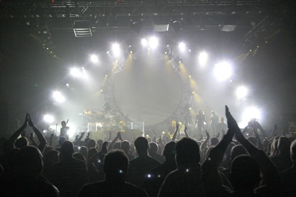

Před 564 lety vynalezl Honza Gutenberg knihtisk. Asi tehdy netušil, co úžasného se mu povedlo a už vůbec netušil, že jeho řemeslo přežije do daleké budoucnosti. Že se vědy s ním spojené nebudou omezovat na papírový tisk, ale proniknou také do vod internetu, kde není nic nemožné. Internetu, celosvětové sítě, již jsme už dávno přestali psát s velkým písmenem na začátku, protože zevšedněla a tvoří náš druhý svět. Internetu, místa, kde v dnešní době i tak ryze papírová záležitost jako ...
Tak je to za mnou. Jaký byl nedělní koncert The Australian Pink Floyd Show? Těžko říct. Některé věci nelze popsat slovy :) . A pocity?

Numb
Začněme tím, co bylo trochu hořké. Koncert byl skvělý a dokonalý do posledního detailu, ale malinko jeho atmosféru snižovalo samotné publikum. Je velká škoda, že jsem byl na koncertě v České republice, zemi kde nerozumí anglicky. Kde nerozumí tomu, co jejich milášci řeknou na pódiu, kde nehodlají zpívat s kapelou. A to ani křičet tak jednoduchá ...
Předpověď počasí je k ničemu a nevěřili byste, jak dlouhý článek o tom jde napsat ;) . No vážně. Empiricky jsem dospěl k názoru, že nemá smysl sledovat předpovědi počasí v novinách, televizích, internetech, ba co víc, ani jej poslouchat v rádiích a napsal jsem o tom hrozně dlóóóóóóóuhé pojednání, které šlo, jako obvykle, napsat jednou větou. Jenže to byste přišli o ty hezké spojky a přívlastková květenství písemného projevu!
Proč nesledovat mapku republiky s mráčky? Jednoduše proto, že ani dnes, ve ...
Dneska jsem ale zaregistroval, že David se do komentářů začal podepisovat celým jménem a do kolonky pro web vyplňuje http://www.davidgrudl.com/. Myslím (a jsem tomu rád) že prodej dgx.cz nebude tečka za slávou jednoho generátoru textů. Možná tak středník
;) .
Tak jsem se rozhodl začít něco dělat ve své věci studia v zahraničí :) . Postupně se s vámi hodlám dělit o vše, co dělám, aby to mohlo být návodem pro druhé. Z informací nalezených na internetu jsem vysledoval, že dost lidí, kteří jedou na Erasmus, si o tom píšou blog. Také jsem ale vysledoval, že začínají nejlépe příjezdem do země – všichni však víme, že bez předehry to prostě není ono, takže se to posnažím napravit. A ještě něco – aby moje návody ...